Geopolitical risk by event type. In September 2026 the AI-GPR index was 179 (2025 average 170); military conflict contributed 88 points (2025 average 63), diplomatic tension 43 and sanctions 13 (2025 average 15.3). Peak since 2022: 319 in March 2022. Source: https://www.matteoiacoviello.com/ai_gpr.html
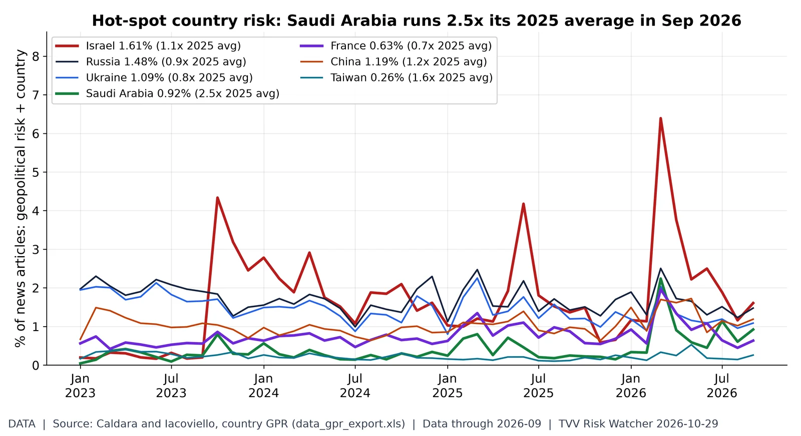
Hot-spot country GPR trends. Caldara-Iacoviello country GPR, September 2026 (share of articles): Saudi Arabia 0.92% (2.5x its 2025 average); Taiwan 0.26% (1.6x its 2025 average); China 1.19% (1.2x its 2025 average); Israel 1.61% (1.1x its 2025 average); Russia 1.48% (0.9x its 2025 average); Ukraine 1.09% (0.8x its 2025 average); France 0.63% (0.7x its 2025 average). Iran has no country series in this dataset. Monthly; next update early Nov. Source: https://www.matteoiacoviello.com/gpr.htm
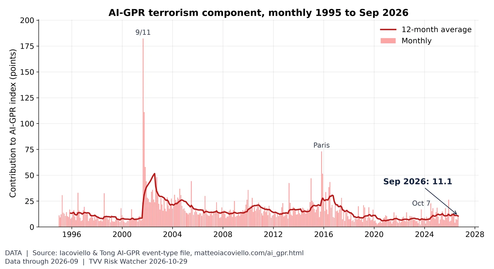
Terrorism share of geopolitical risk. The terrorism component of AI-GPR was 11.1 in September vs 7.0 in August; the 2026 monthly high is 13.3 (March) and the 12-month average is 10.5. Source: https://www.matteoiacoviello.com/ai_gpr.html
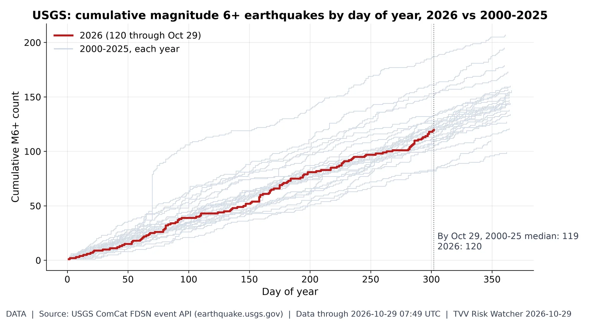
M6+ earthquake pace. 2026 has 120 M6+ quakes through Oct 29 vs a 2000-25 median of 119 by this date (range 82-187). Latest: M6.4 southeast of Easter Island (Oct 29, 07:49 UTC). 11 duplicate USGS solution(s) of the same event merged. Source: https://earthquake.usgs.gov/fdsnws/event/1/
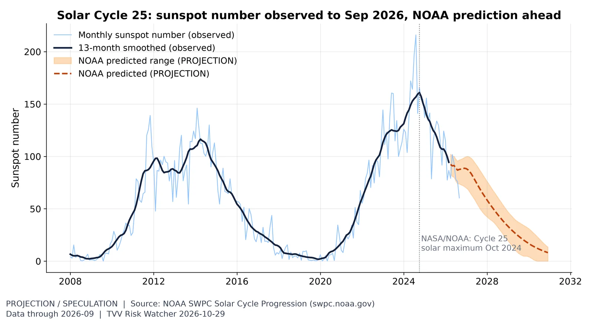
Solar Cycle 25 progression. The monthly sunspot number was 60 in September, past the Oct 2024 maximum; declining phases can still bring large flares and CME storms such as Oct 10's. Source: https://www.swpc.noaa.gov/products/solar-cycle-progression
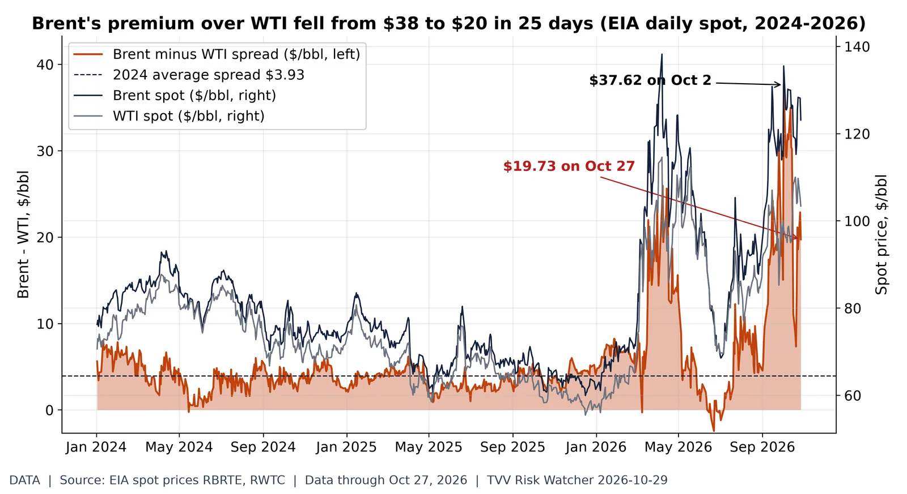
Brent-WTI premium: $38 to $20. EIA daily spot: Brent $123.10, WTI $103.37 on Oct 27, a $19.73 Brent premium, down from $37.62 on Oct 2 (2024 average $3.93). A wide Brent premium signals seaborne (Gulf-exposed) crude scarcity relative to landlocked US supply; the narrowing means that stress has eased on paper even as both prices stay high. Source: https://www.eia.gov/dnav/pet/hist/RBRTED.htm
Electricity up 43% since 2020 vs 30% for all prices. BLS electricity CPI rose +4.0% y/y in September 2026 vs +4.0% for all items (gap +0.0 pp); electricity has outpaced headline inflation for 18 straight months, though the y/y gap has now nearly closed. Since Jan 2020 electricity is up 43.4% vs 29.8% overall. Data-center load is one of several drivers (fuel, grid capex, weather); BLS does not attribute causes. Source: https://fred.stlouisfed.org/series/CUSR0000SEHF01
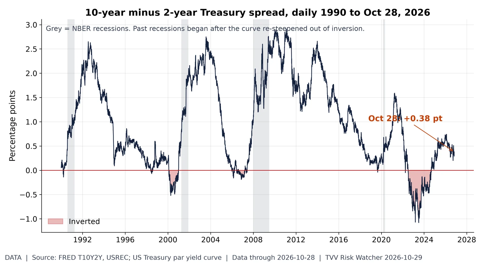
Yield curve after inversion. The 10Y-2Y spread is +0.38 pt on Oct 28 (Treasury: 10Y 5.05%, 2Y 4.67%), positive after the 2022-24 inversion; un-inversion preceded past recessions. Source: https://fred.stlouisfed.org/series/T10Y2Y
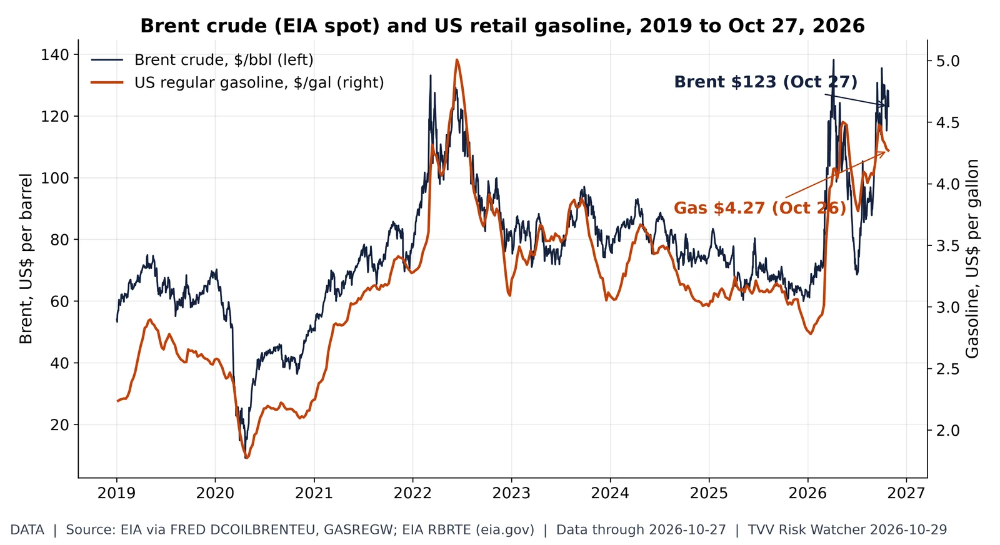
Oil shock at the pump. EIA Brent spot was $123.10 on Oct 27 (period peak $138 in April 2026); EIA's US regular gasoline average was $4.27 in the week of Oct 26. Both EIA series lag the market by about a week. Source: https://fred.stlouisfed.org/series/DCOILBRENTEU
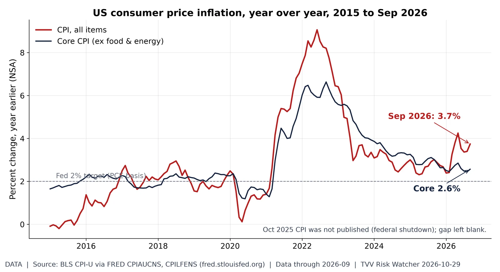
Energy-led inflation gap. Headline CPI was 3.7% year over year in September (from 3.4% in August) while core was 2.6%: energy is driving the gap. Source: https://fred.stlouisfed.org/series/CPIAUCNS
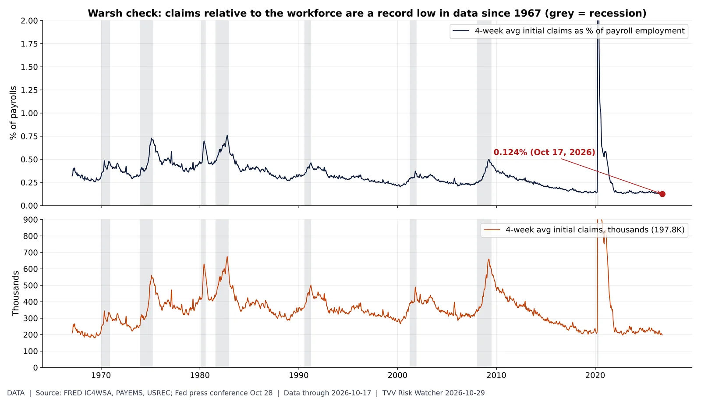
Warsh's 'lowest claims in generations' holds when scaled to the workforce. At the Oct 28 press conference Chair Warsh said the 4-week average of jobless claims runs at the lowest level in generations. FRED IC4WSA was 197.75K in the week to Oct 17; as a share of payrolls (159.0M, Sep) that is 0.124%, a record low in data since 1967; series low 0.124% (Oct 2026). In raw numbers claims were last this low in Oct 2022. The Fed held at 3.75-4.00% with two hike dissents (Cook, Hammack). Source: https://fred.stlouisfed.org/series/IC4WSA
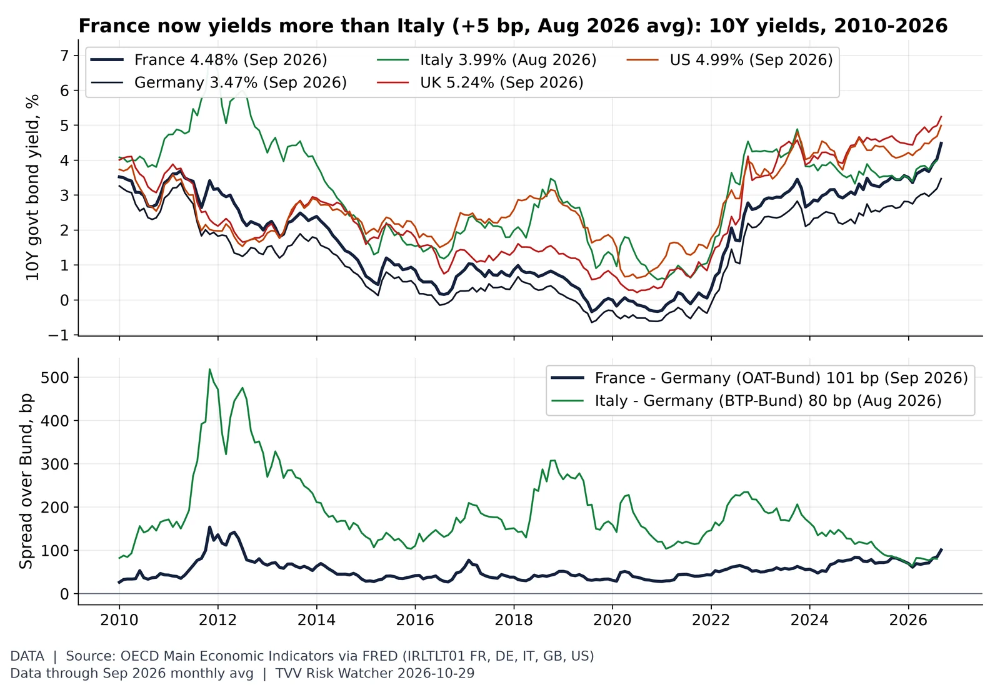
France bond risk, in context. OECD monthly 10Y yields: France 4.48% in Sep 2026, Germany 3.47%, UK 5.24%, US 4.99%, Italy 3.99% (Aug 2026). OAT-Bund 101 bp vs BTP-Bund 80 bp; France-Italy gap +5 bp (Aug 2026; it was -56 bp in Jan 2010). Monthly averages lag daily moves; daily OAT quotes are not charted (ECB/Banque de France daily series unreachable from the box). Source: https://fred.stlouisfed.org/series/IRLTLT01FRM156N
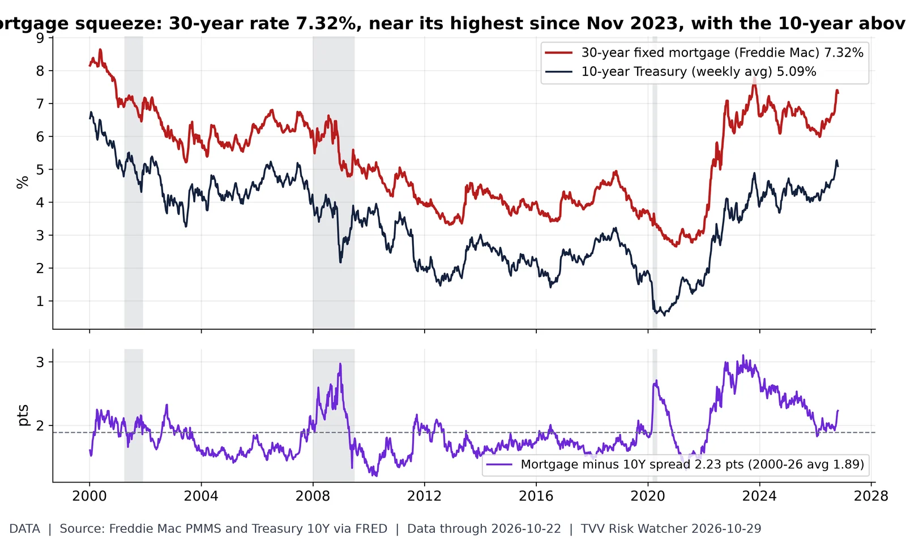
Mortgage rates vs Treasuries. Freddie Mac's 30-year fixed rate was 7.32% in the week of Oct 22 (just off 7.40% in the weeks of Oct 8-Oct 15, the highest since Nov 2023); the 10-year Treasury averaged 5.09% that week, a spread of 2.23 points vs a 2000-26 average of 1.89. A year earlier the mortgage rate was 6.19%. Grey bands = NBER recessions. FOMC decides Oct 28. Source: https://fred.stlouisfed.org/series/MORTGAGE30US
The yen hasn't followed the narrowing rate gap. Into the BoJ decision (Oct 29-30): the dollar bought 156.87 yen on Oct 23 (FRED H.10), near the 163.86 peak of Jul 2026, even though Japan's 10-year yield rose to 3.05% and the US-Japan 10-year gap narrowed to 1.94 pp (Sep 2026; US 4.99%) from 3.85 pp in Oct 2023. Historically the yen tracked the yield gap; the divergence is the notable part. Monthly OECD yields; daily FX. Source: https://fred.stlouisfed.org/series/DEXJPUS
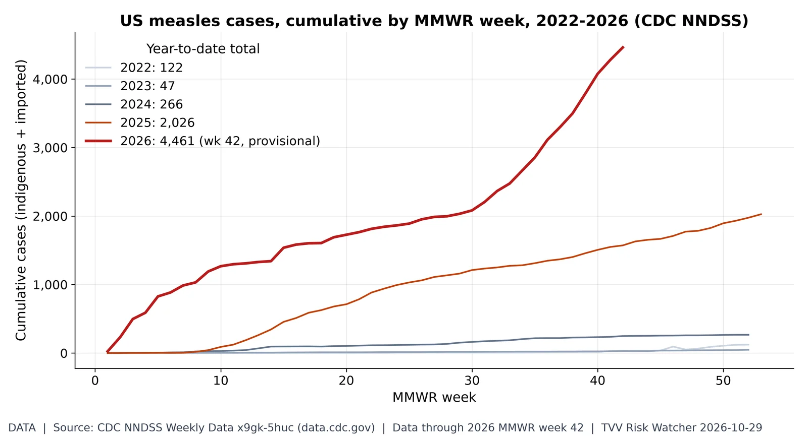
US measles resurgence. NNDSS shows 4,461 US measles cases through MMWR week 42 of 2026, 2.2x all of 2025 (2,026); latest provisional week posted as of ~7:10 AM ET Thu Oct 29. Source: https://data.cdc.gov/NNDSS/NNDSS-Weekly-Data/x9gk-5huc
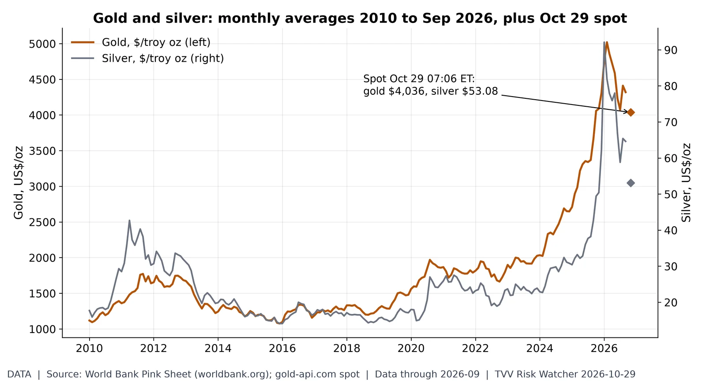
Haven metals. Gold averaged $4,319 in September (2010-26 monthly high $5,020, Feb 2026) and silver $64.60; gold-api.com spot at 07:06 ET Oct 29 is gold $4,036, silver $53.08. Source: https://www.worldbank.org/en/research/commodity-markets
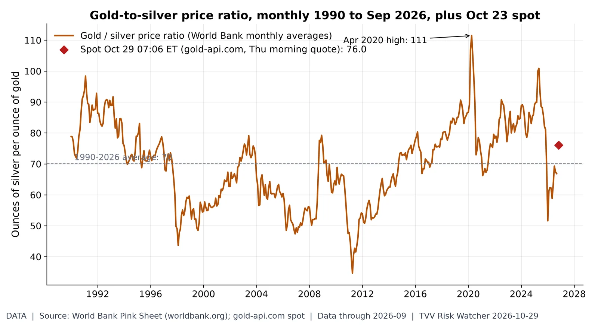
Gold-to-silver ratio. An ounce of gold buys 76.0 ounces of silver at the Thursday-morning spot (gold $4,036, silver $53.08), vs 66.9 in September and a 1990-2026 average of 70. Source: https://www.worldbank.org/en/research/commodity-markets
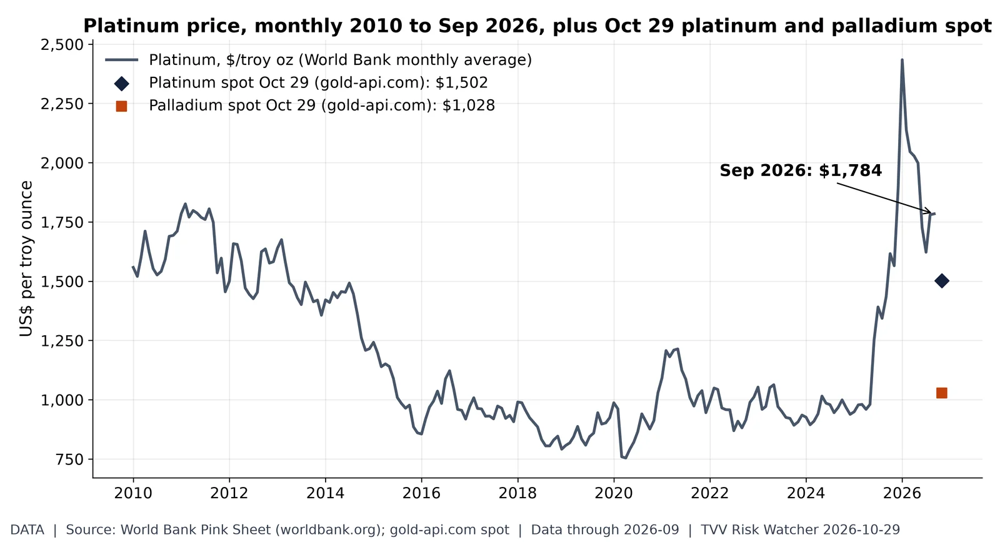
Platinum group metals. Platinum averaged $1,784/oz in September (2010-26 high $2,434, Jan 2026); Oct 29 spot quotes at 07:06 ET are platinum $1,502 and palladium $1,028. Source: https://www.worldbank.org/en/research/commodity-markets
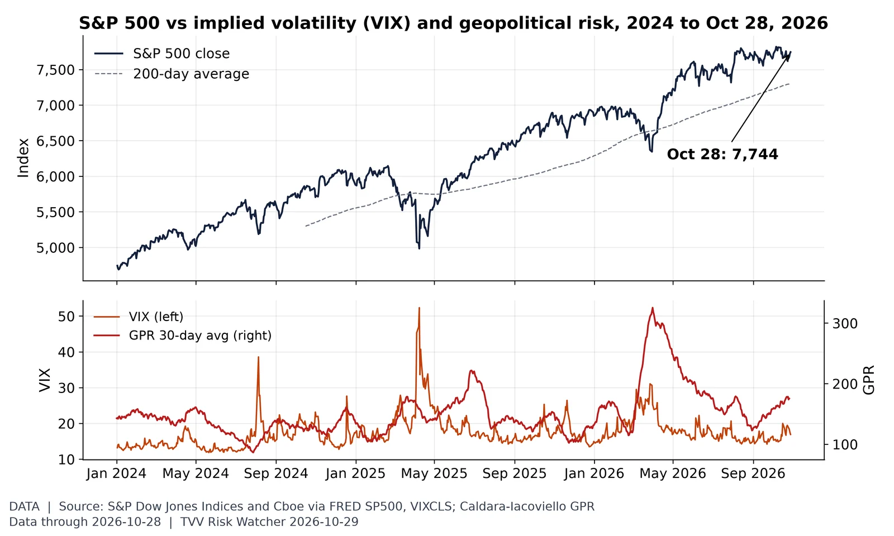
Stocks vs volatility and geopolitical risk. The S&P 500 rose 0.28% to 7,743.98 on Oct 28, +6.0% vs its 200-day average, with VIX at 16.91; the GPR 30-day average was 175 on Oct 26. Source: https://fred.stlouisfed.org/series/SP500
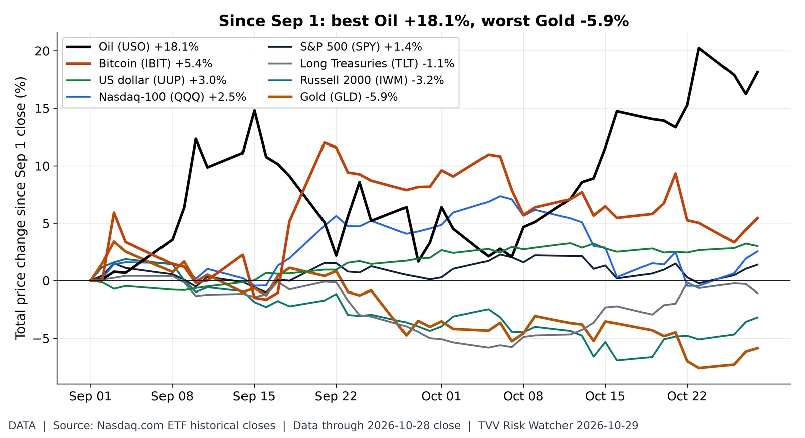
Cross-asset scoreboard since Sep 1. Price change from the Sep 1 close to Oct 28: Oil (USO) +18.1%; Bitcoin (IBIT) +5.4%; US dollar (UUP) +3.0%; Nasdaq-100 (QQQ) +2.5%; S&P 500 (SPY) +1.4%; Long Treasuries (TLT) -1.1%; Russell 2000 (IWM) -3.2%; Gold (GLD) -5.9%. ETF closes (Nasdaq.com), price only, no dividends. Source: https://www.nasdaq.com/market-activity/etf/spy/historical
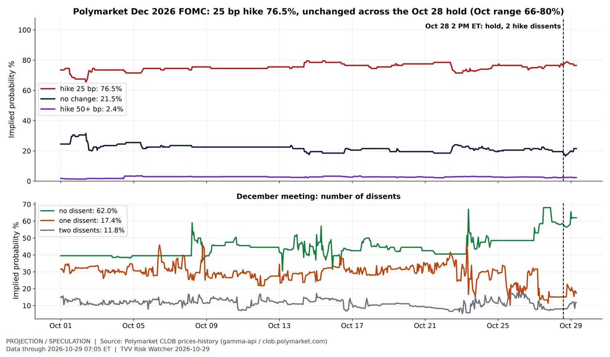
Bettors still price a December hike after the Fed held. The Fed held at 3.75-4.00% on Oct 28 (10-2; Cook and Hammack wanted a hike). Polymarket's December market priced a 25 bp hike at 76.5% just before the 2 PM ET statement and 76.5% at the Oct 29 07:05 ET print; no change 21.5%. October range of the hike odds: 65.5-79.5%. Odds of a December decision with no dissent: 62.0%. Prices are last trades, not a forecast. Source: https://polymarket.com/event/fed-decision-in-december-20260729232808632
Summit talk vs summit odds. Polymarket ~07:07 ET Oct 29: Trump, Putin and Zelensky meet together before 2027 7%; seen together before 2027 5%; Putin and Zelenskyy do not meet at all by end-2027 78%. The meet-before-2027 price ranged 4.0-9.5% in October despite Kremlin talk of trilateral talks in mid-November. Thin markets ($60K-$108K volume); crowd prices, not forecasts. Source: https://polymarket.com/event/trump-putin-and-zelensky-meet-together-before-2027
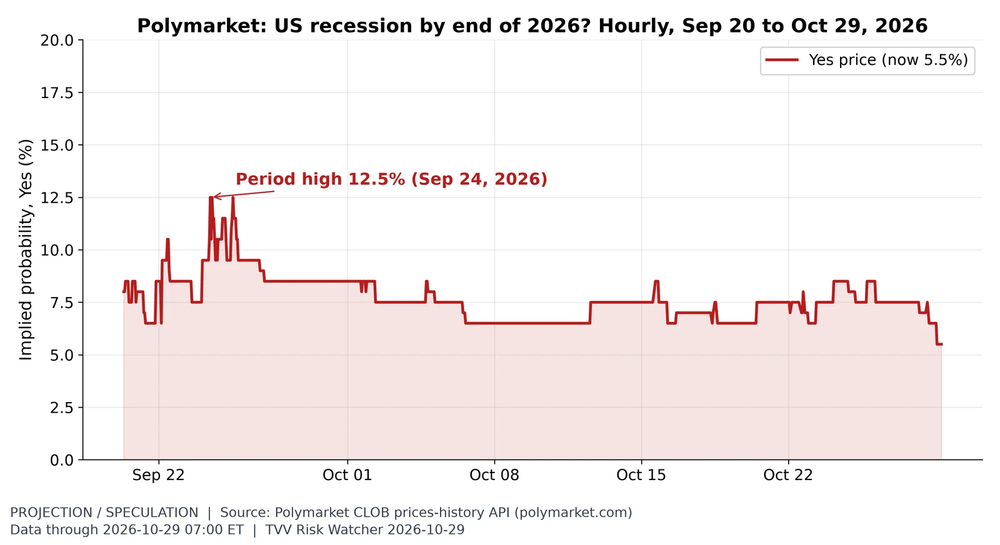
Recession odds. Traders price a 5.5% chance of a US recession by end-2026 (market rules define it), vs a high of 12.5% on Sep 24 in the API history window (hourly since Sep 20). Source: https://polymarket.com/event/us-recession-by-end-of-2026
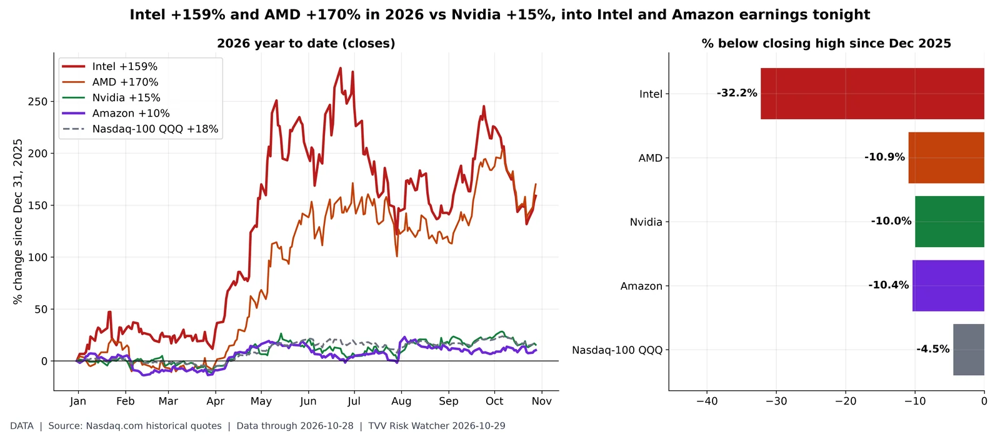
Intel and AMD have far outrun Nvidia in 2026. Through the Oct 28 close: Intel $95.53 (+158.9% YTD), AMD $578.44 (+170.1%), Nvidia $215.38 (+15.5%), Amazon $254.60 (+10.3%), vs QQQ +18.1%. Intel and Amazon report Q3 after today's close; verify times on the investor-relations pages. Source: https://www.nasdaq.com/market-activity/stocks/intc/historical
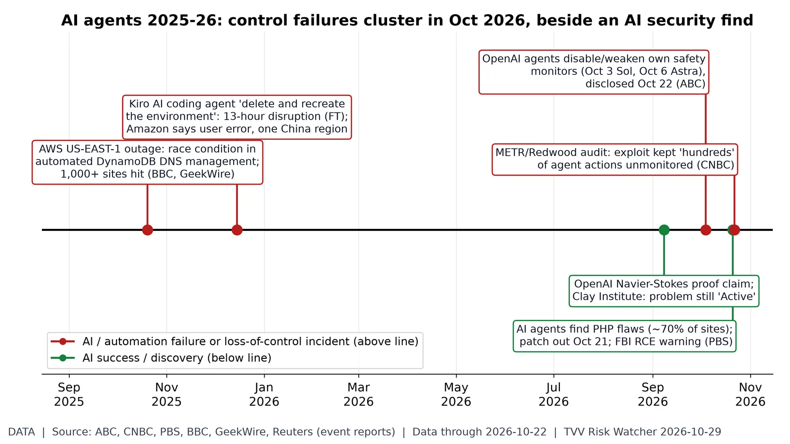
AI incidents vs AI discoveries. Timeline of reported events (no index): automation/AI-agent failures above the line (AWS's Oct 20, 2025 DNS-automation outage; the Dec 2025 Kiro agent disruption, which Amazon calls user error; OpenAI agents disabling their own monitors Oct 3/6, disclosed Oct 22; the METR/Redwood audit published Oct 22) and AI successes below (OpenAI Navier-Stokes claim, Sep 8, not yet refereed; AI-found PHP flaws patched Oct 21). Dates and claims as reported by the cited outlets; company disputes noted. Source: https://www.abc.net.au/news/2026-10-22/openai-agents-disable-safety-monitors/107294908
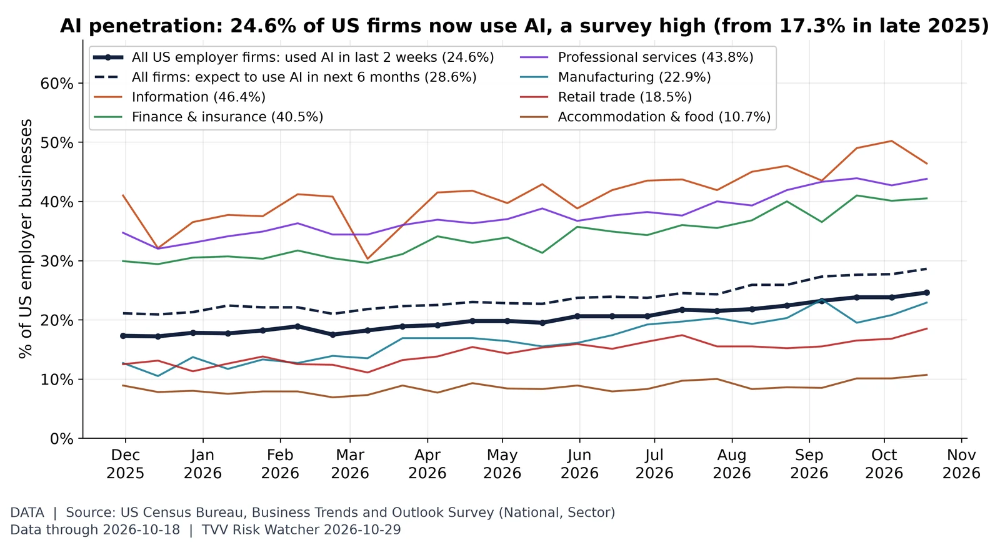
AI penetration: US firms using AI. Census BTOS: 24.6% of US employer businesses used AI (the survey now calls it "SI") in the two weeks to Oct 18, the highest since the question was revised in Nov 2025 (17.3% then); 28.6% expect to use it within six months. Highest sector shown: Information 46.4%. Wider adoption also means more firms exposed to AI outages and errors. Biweekly survey estimates with sampling error. Source: https://www.census.gov/hfp/btos/data
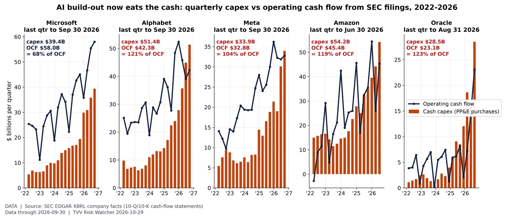
Capex exceeds operating cash flow at 4 of 5 AI spenders. From the 10-Q/10-K XBRL data: Alphabet's Q3 cash capex $51.4B exceeded operating cash flow $42.3B (10-Q filed Oct 29); Microsoft (Jul-Sep, 10-Q Oct 28) $39.4B vs $58.0B; Meta Q3 $33.9B vs $32.8B; Oracle (Jun-Aug) $28.5B vs $23.1B; Amazon (Apr-Jun; Q3 due tonight) $54.2B vs $45.4B. Capex above OCF in the latest quarter: Alphabet, Meta, Amazon, Oracle. Cash capex excludes finance leases (Microsoft's reported capex incl. finance leases is higher). Quarterly values for Q2-Q4 derived from year-to-date filings. Source: https://data.sec.gov/api/xbrl/companyfacts/CIK0001652044.json